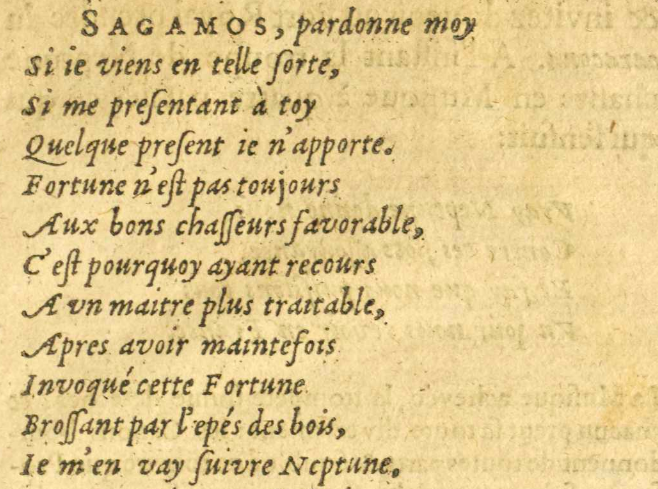
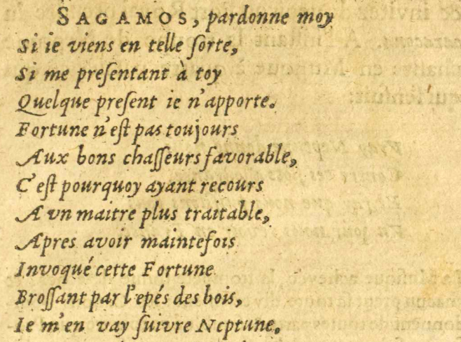
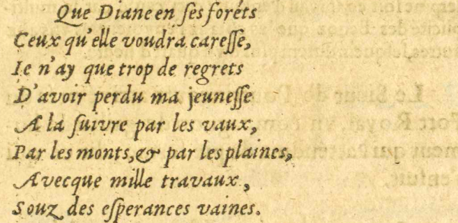
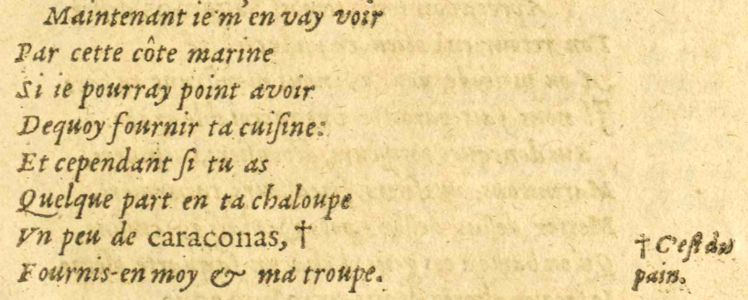
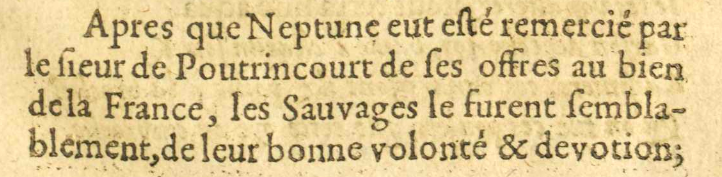

9/11
- SAGAMOS, pardonne moy
- Si me preſsentant à toy
- Quelque preſsent ieje n'apporte.
- Fortune n'eſst pas toujours
- Aux bons chaſsſseurs favorable,
- C'eſst pourquoy ayant recours
- A vnun maitre plus traitable,
- Apres avoir maintefois
- Invoqué cette Fortune
- Broſsſsant par l'épésE11 E12 : épès des bois,
- IeJe m'en vay ſsuivre Neptune
 Dieu d'origine latine des eaux vives et des sources, puis des mers. .E11 : ,
Dieu d'origine latine des eaux vives et des sources, puis des mers. .E11 : ,
 
- Que Diane
 Déesse romaine de la chasse et du monde sauvage. en ſses foréts
Déesse romaine de la chasse et du monde sauvage. en ſses foréts - Ceux qu'elle voudra careſsſse,
- IeJe n'ay que trop de regrets
- D'avoir perdu ma jeuneſsſse
- A la ſsuivre par les vaux#16,
- Par les monts, & par les plaines,E11 E12 :
- Avecque#17 mille travaux,
- [Par les bois & par les plaines,]E17 E18 : Par les bois & par les plaines,
- Souz des eſsperances vaines.
- Maintenant ieje m'en vay voir
- Par cette côte marine
- Si ieje pourray point avoir
- Dequoy fournir ta cuisine :
- Et cependant ſsi tu as
- Quelque part en ta chaloupe
- VnUn peu de caraconas, †
† C'eſst du
pain. - Fournis-en-moy & ma troupe.

Après que NeptuneDieu d'origine latine des eaux vives et des sources, puis des mers. eut eſsté remercié par
le ſsieur de Poutrincourt Fondateur de la colonie de Port-Royal en Nouvelle-France. de ſses offres au bien
Fondateur de la colonie de Port-Royal en Nouvelle-France. de ſses offres au bien
de la France, les Sauvages Désignation de ceux habitant dans la nature, c'est-à-dire loin de la civilisation. le furent ſsembla-
Désignation de ceux habitant dans la nature, c'est-à-dire loin de la civilisation. le furent ſsembla-
blement, de leur bonne volonté & devotions;E18 : :